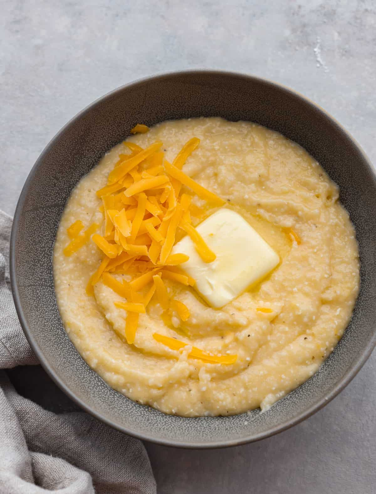

Go back
Cheesy Grits

Description
A nice bowl of warmth and welcoming Southern cookin'. You'll forget all your troubles
after a nice heaping helping of these cheese grits.
Here's what you'll need:
- 4 cups low-sodium chicken broth
- 1 garlic clove, minced
- 1 cup old-fashioned grits
- 4 ounces extra-sharp cheddar cheese, shredded (1 1/2 cups)
- 4 tablespoons unsalted butter
- 2 tablespoons heavy cream
- Kosher salt
- Freshly ground black pepper
Steps:
- In a medium saucepan, bring the chicken broth to a boil.
- Add the garlic and slowly stir in the grits. Reduce heat to moderately low
and cook, stirring frequently until grits are tender for 20 minutes.
- Remove the saucepan from the heat and stir in the cheese, butter and cream.
- Season with salt and pepper and serve immediately.